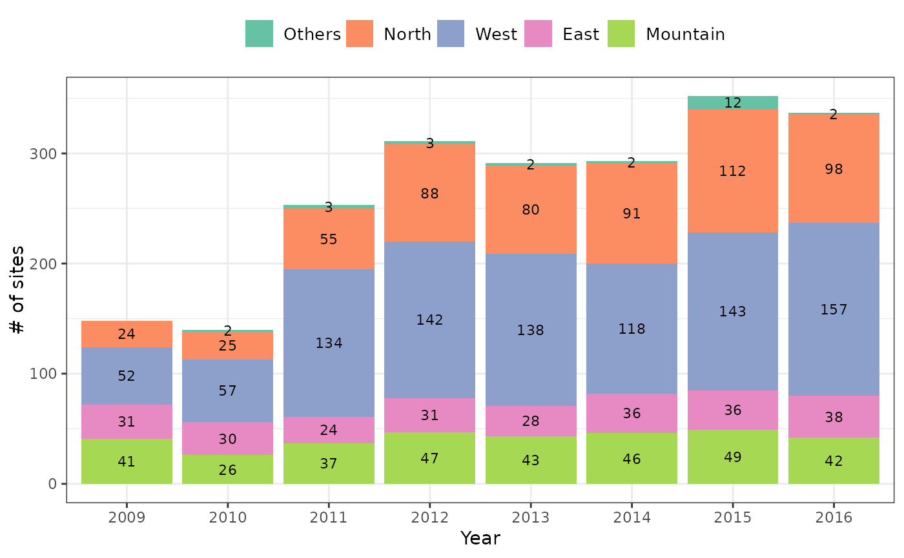

This function returns the number of sites surveyed each year in the BBS Taiwan project. Sites were mapped into five regions: East, West, South, North, and Mountain (elevation higher than 1,000 m).
Examples
# Return the number of sites in a table
bbs_history(type = "table")
#> # A tibble: 8 × 6
#> year East Mountain North West Others
#> <chr> <int> <int> <int> <int> <int>
#> 1 2009 31 41 24 52 0
#> 2 2010 30 26 25 57 2
#> 3 2011 24 37 55 134 3
#> 4 2012 31 47 88 142 3
#> 5 2013 28 43 80 138 2
#> 6 2014 36 46 91 118 2
#> 7 2015 36 49 112 143 12
#> 8 2016 38 42 98 157 2
# Return the number of sites in a bar chart
bbs_history(type = "plot")
